Examples
Contents
FWI
see example_fwi.m
[v,o,d,n] = odnread(['../data/bg_vp.odn']); [v0,o,d,n] = odnread(['../data/bg_v0.odn']); [m1,o,d,n] = odnread(['../results/fwi/m_ls_1.odn']); [m2,o,d,n] = odnread(['../results/fwi/m_ls_2.odn']); [m3,o,d,n] = odnread(['../results/fwi/m_ls_3.odn']); [m4,o,d,n] = odnread(['../results/fwi/m_ls_4.odn']); [z,x] = odn2grid(o,d*1e-3,n); figure; imagesc(x,z,1e-3*reshape(v,n),[1.5 4.5]); xlabel('x [km]');ylabel('z [km]');axis equal tight; title('BG Compass velocity model'); figure; imagesc(x,z,1e-3*reshape(v0,n),[1.5 4.5]); xlabel('x [km]');ylabel('z [km]');axis equal tight; title('initial velocity model'); figure; imagesc(x,z,reshape(real(1./sqrt(m1)),n),[1.5 4.5]); xlabel('x [km]');ylabel('z [km]');axis equal tight; title('result after inversion of 1st frequency band'); figure; imagesc(x,z,reshape(real(1./sqrt(m2)),n),[1.5 4.5]); xlabel('x [km]');ylabel('z [km]');axis equal tight; title('result after inversion of 2nd frequency band'); figure; imagesc(x,z,reshape(real(1./sqrt(m3)),n),[1.5 4.5]); xlabel('x [km]');ylabel('z [km]');axis equal tight; title('result after inversion of 3rd frequency band'); figure; imagesc(x,z,reshape(real(1./sqrt(m4)),n),[1.5 4.5]); xlabel('x [km]');ylabel('z [km]');axis equal tight; title('result after inversion of 4th frequency band');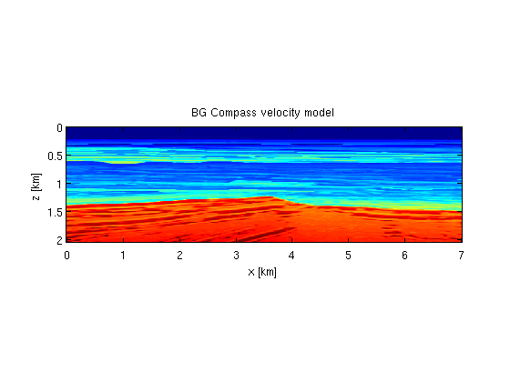 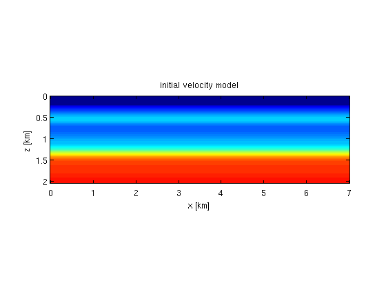 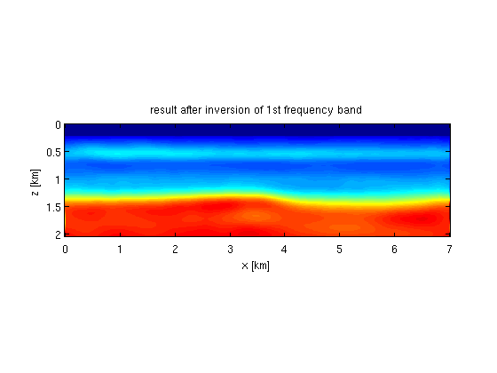 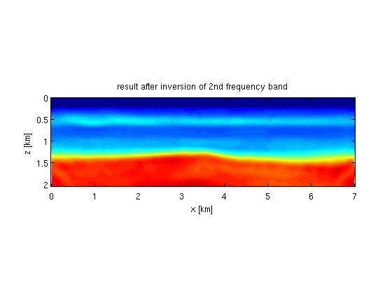 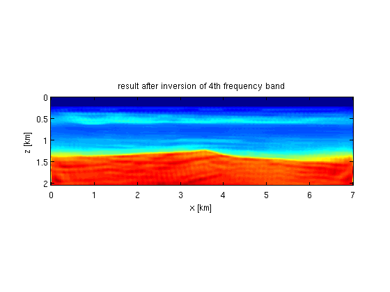
Reverse time migration
see example_rtm.m
[v,o,d,n] = odnread(['../data/marm_vp.odn']); v = reshape(v,n); v = [1500*ones(60,501); v(1:301,500 + [1:501])]; n = size(v); S = opKron(opSmooth(n(2),200),opSmooth(n(1),200)); % smooth model m = 1e6./v(:).^2; m0 = S*m; dm = m - m0; dm = reshape(dm,n); v0 = reshape(1e3./sqrt(m0),n); [dmt,o,d,n] = odnread(['../results/rtm/dmt.odn']);dmt=reshape(dmt,n); [z,x] = odn2grid(o,d,n); figure; imagesc(x,z,v,[1500 4700]);colorbar; xlabel('x [m]');ylabel('z [m]'); axis equal tight; title('Marmousi velocity model') figure; imagesc(x,z,v0,[1500 4700]);colorbar; xlabel('x [m]');ylabel('z [m]'); axis equal tight; title('Reference velocity used for RTM') figure; imagesc(x,z,dm,[-1 1]*1e-1);colormap(gray); xlabel('x [m]');ylabel('z [m]'); axis equal tight; title('True perturbation'); figure; imagesc(x,z,dmt,[-1 1]*1e6);colormap(gray); xlabel('x [m]');ylabel('z [m]'); axis equal tight; title('Recovered image');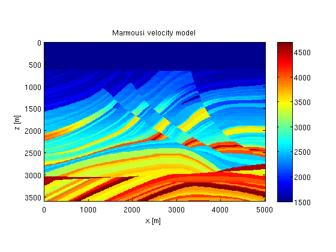 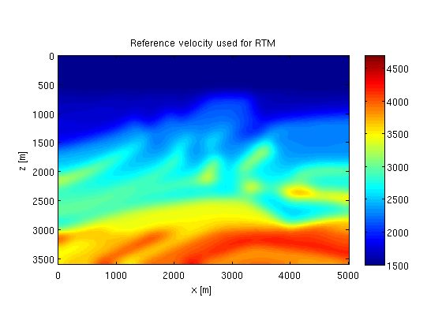 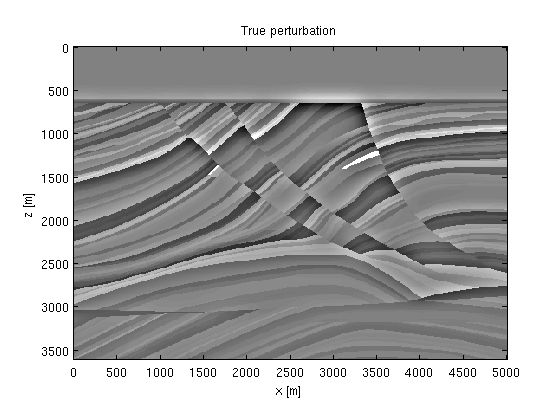 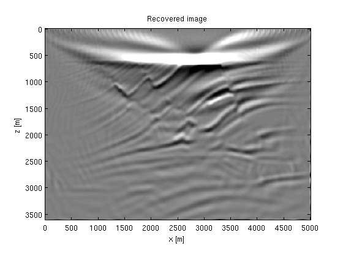
Traveltime tomography
see example_tomo.m
[Dt,od,dd,nd] = odnread(['../results/tomo/Dt.odn']); Dt = reshape(Dt,nd); [D0t,od,dd,nd] = odnread(['../results/tomo/D0t.odn']); D0t = reshape(D0t,nd); [Ct,od,dd,nd] = odnread(['../results/tomo/Ct.odn']); Ct = reshape(Ct,nd); T = odnread(['../results/tomo/croswell_time.odn']); T = reshape(T,nd(1:2)); [k1,o,d,n] = odnread(['../results/tomo/k1.odn']); k1 = reshape(k1,n); [dm,o,d,n] = odnread(['../data/crosswell_vp.odn']); dm = reshape(dm,n); [dmt,o,d,n] = odnread(['../results/tomo/dmt.odn']); dmt = reshape(dmt,n); [zrec,zsrc,t] = odn2grid(od,dd,nd); [z,x] = odn2grid(o,d,n); figure; imagesc(x,z,dm,[1800 2500]); xlabel('x [m]');ylabel('z [m]');colorbar; title('True velocity perturbation') figure; imagesc(t,zrec,-squeeze(Dt(:,11,:)),[-1 1]*2e2);colormap(gray); ylabel('z_r [m]');xlabel('t [s]');xlim([0 1]); set(gca,'plotboxaspectratio',[1 2 1]); title('Corresponding waveform data for one source') figure; imagesc(t,zrec,-squeeze(D0t(:,11,:)),[-1 1]*2e2);colormap(gray); ylabel('z_r [m]');xlabel('t [s]');xlim([0 1]); set(gca,'plotboxaspectratio',[1 2 1]); title('Reference data for one source') figure; imagesc(t-1,zrec,fftshift(squeeze(Ct(:,11,:)),2),[-1 1]*4e4);colormap(gray); ylabel('z_r [m]');xlabel('\Delta t [s]');xlim([-.25 .25]);set(gca,'plotboxaspectratio',[1 2 1]); tmp=fftshift(squeeze(Ct(:,11,:)),2); [~,it] = max(tmp,[],2); hold on;plot(t(it)-1,zrec,'r') title('Correlation of observed and reference data') figure; imagesc(zrec,zsrc,T); xlabel('z_r [m]');ylabel('z_s [m]');colorbar title('Traveltime data for each source/receiver pair'); figure; imagesc(x,z,k1); xlabel('x [m]');ylabel('z [m]'); title('Sensitivity kernel for one source-receiver pair') figure; imagesc(x,z,1e3./sqrt(.25+dmt),[1800 2500]); xlabel('x [m]');ylabel('z [m]'); title('Reconstructed velocity perturbation after 10 LSQR iterations')
 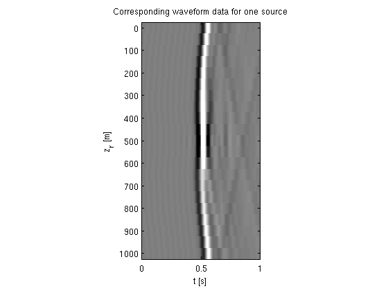 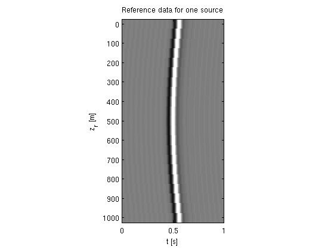
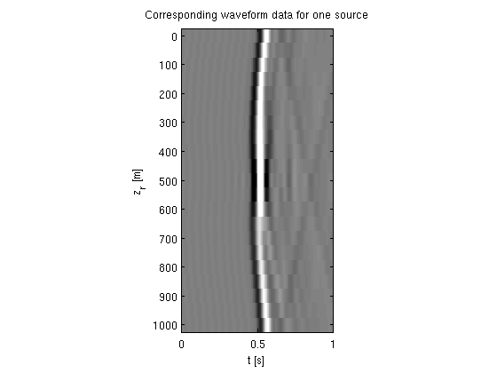 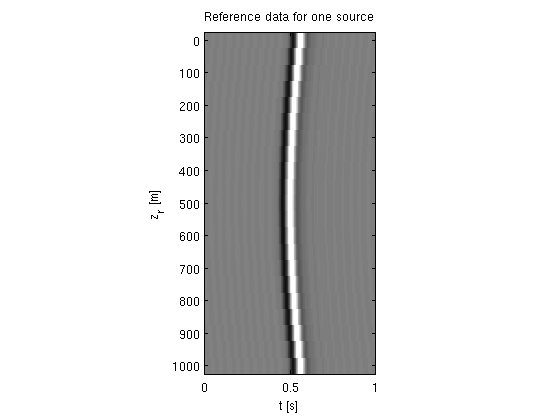  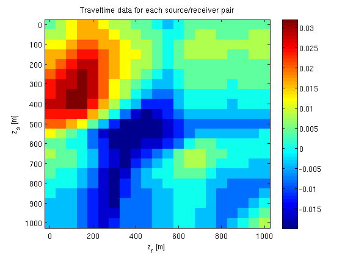 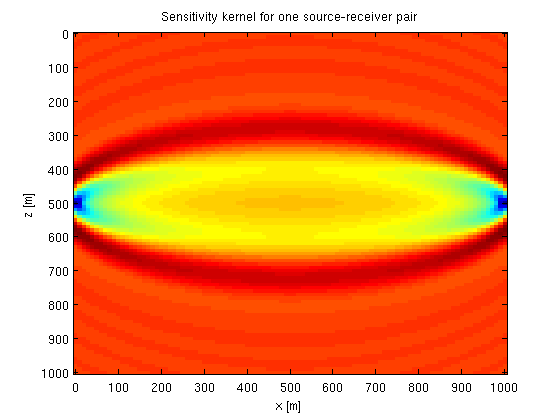 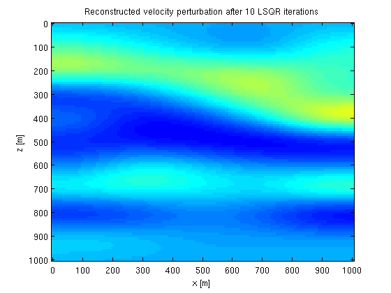
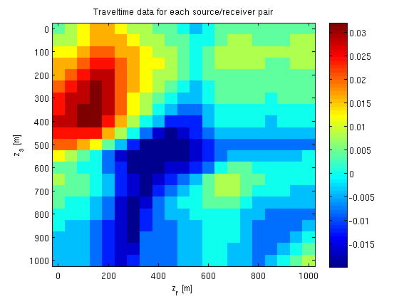 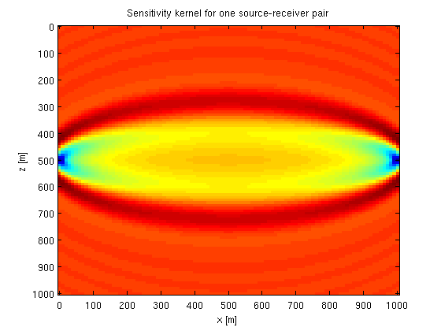 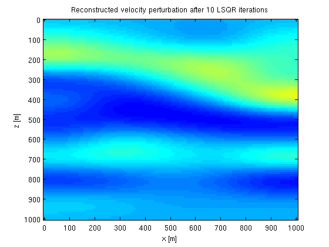